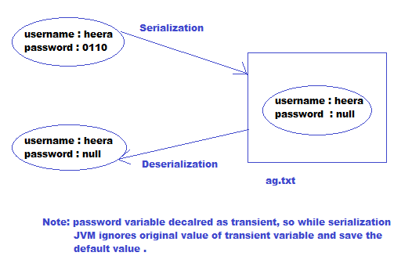

Member Modifiers :
public members :
- If a member declared as public, then we can access that member from anywhere . Means from inside the class, outside of class, iside of package and outside of package
- But the corresponding class should be visible, means from which class we are going to access that class should visible .
So before checking member visibility we have to check class visibility .
- If both class and members are public then only we can access that members from outside package .
default members :
- If a member declared as default, we can access that member within the current package anywhere . i.e from outside the package we can not access .
private members :
- If a member declared as private, we can access that member only within the current class . i.e outside the class we can not access .
protected members :
- If a member declared as protected, then we can access that member anywhere within the current package,
but only in child class outside package .
- Means protected scope = default scope[Within package] + child class[outside package]
- We can access protected members within the current package anywhere either by using parent reference or child reference .
- But outside package we can access protected member only by using child reference and we can not use parent reference to access .
- The most restricted modifiers is private and the most accessible modifiers is public
- Recommended modifier for variable is private where as for method is public .
final variable :
final instance variable :
- If the value of a variable is varied from object to object such type of variables are called instance variable .
- For every object a separate copy of instance variable will be created .
- For instance variable, we are not required to perform initialization explicitly, JVM will provide default value .
- But if the instance variable declared as final then compulsory we have to perform initialization explicitly whether we are using ot not ,
otherwise we will get compile time error .
final static variable :
- If the value of variable is not varied from object to object then it is never recommended to declare that variable as instance .
We have to declare such type of variable at class level by using static modifier .
- In case of instance variable, for every object a separate copy will be created, but in case of static variable a single copy will be created at class level
- For static variables, we are not required to perform initialization explicitly and JVM will provide default value .
- If we declare static variable as final then compulsory we should perform initialization explicitly, other wise we will get compile time error .
- For final static variables, compulsory we should perform initialization before class loading .
- The following are various places to perform initialization for final static variables .
- If we perform initialization anywhere else we will get compile time error .
final local variable :
- Sometimes to meet temporary requirements of the programmer we have to declare variable inside a method, block and constructor, such type of variables are called local variables .
- For the local variables, JVM won't provide any default values . We have to perform initialization explicitly, before using that local variable .
- Eventhough local variable declared as final before using only we have to perform initialization .
- If we are not using local variable, then it is not required to perform initialization eventhough it is final .
Formal Parameters :
- Formal parameters of a method simply acts as local variables of that method .
- Hence we can declare formal parameters as final .
- If the formal parameter declared as final then within the method we can not change its value .
Static Modifiers :
- static is the modifier applicable only for variables and methods but not for classes .
- we can not declare top level class as static, but we can declare inner class as static .
- we can access static members directly from instance and static areas,
but we can not access instance members directly from static area .
- we can access instance members directly from instance area .
- instance and static variables with the same name is not allowed,
but instance and local variables or static and local variables can have same name .
- Overloading concept is applicable for static methods including main() method also .
But JVM is always call String[] argument method only .
- Inheritance concept is applicable for static methods including main() method .
Hence while executing child class if child class does not have main() method,
then parent class main() method will be executed .
- For static method when we override it will seems override, but it is actually method hiding .
Synchronized Keyword :
- Synchronized modifier applicable only for methods and blocks, but not for classes and variables .
- If multiple threads operating simultaneously on same java object, then there may be a chance of data inconsistency problems .
To overcome this problem we should go for synchronized .
- If a method or block declared as synchronized then at a time only one thread is allowed to operate method or block on the given object .
So that we can resolve data inconsistency problems .
- But the main disadvantage is that it increases waiting time of threads and creates performance problems .
- Hence if there is no specific requirement then it is never recommended to use synchronized keyword .
transient Keyword :
- transient modifier applicable only for variables, but not for methods and classes .
- We can use transient keyword in serialization .
- While performing serialization if we don't to save the value of a particular variable to meet security constraint,
then such type of variable we should declare as transient keyword .
- At the time of serialization JVM ignores original value of transient variable and save default value to the file .

volatile Keyword :
- volatile modifier is applicable only for variables but not for methods and classes .
- If the value of a variables keep on changing by multiple threads then may be chance of data inconsistency problems .
To overcome this problem we should we should go for volatile modifier .
- If a variable declared as volatile then for every thread a separate copy will be created and all
intermediate modifications performed by that thread will takes place in the local copy . So that there is no effect on remaining threads .
- The man advantage of volatile keyword is we can overcome data inconsistency problems .
- But the disadvantage is creating and maintaining a separate copy for every thread increases complexity and
creates performance problems .